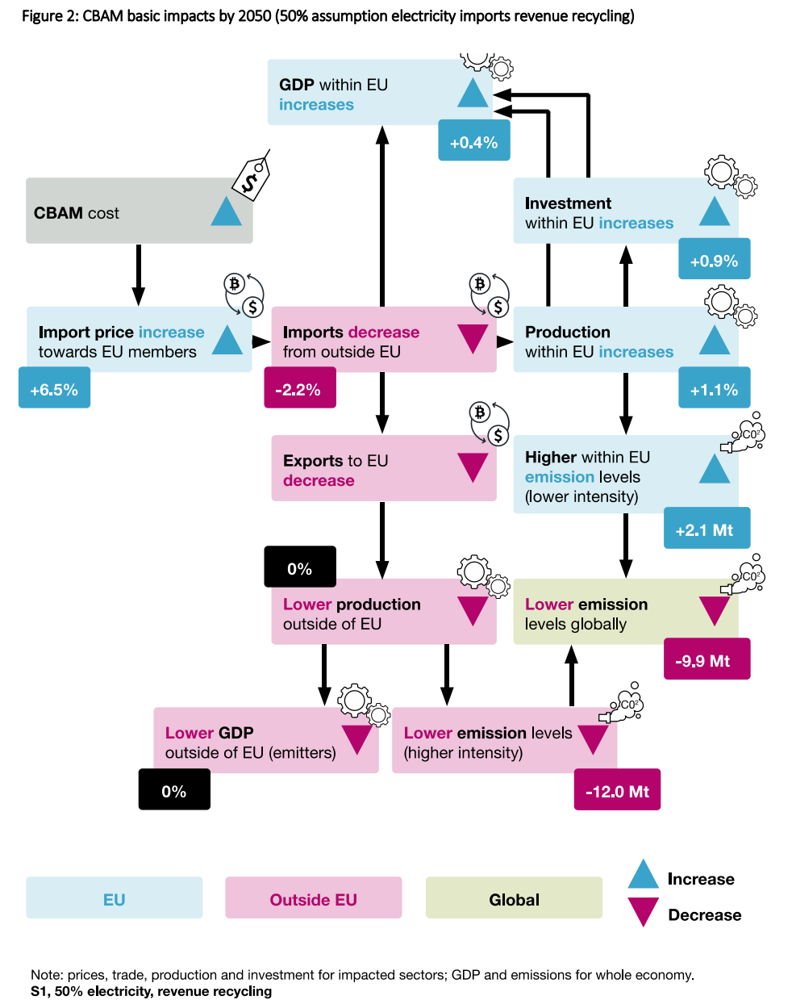

Carbon pricing and CBAM
Here I've collected my research that contributes to various aspects of climate economics. This includes new carbon markets, decarbonization of heavy industry as well as analysis of the EU's proposed CBAM mechanism. In most of these cases the policy analysis is connected with a strong macroeconomic approach, which builds on modelling tools.
EU CBAM
The proposed EU CBAM - carbon border adjustment - is a very interesting topic for many reasons. It sits at the nexus of trade, energy and industrial policy and can have far reaching effects not just on the EU itself, but on its trade partner too. Our analysis, which has been led by the CISL was one of the first that took a multi-disciplinary approach, combining socioeconomic and legal analysis.
First, we have produced a working paper, called On the Borderline, that discussed potential effects of the CBAM as well as some concerns. It has garnered some attention, as we have reported that our simulations has shown potentially positive effects for the overall EU industry, which some production likely relocating operations to the EU. We have introduced the paper in this webinar.
Here is a summary figure of the modelled impacts:

Carbon markets in East Asia
Suk, S., Chewpreecha, U., Liu, Y., Chen, Z., Kiss-Dobronyi, B., Morotomi, T. (2024): Carbon Market Linkage of China, Japan and Korea and Its Decarbonization Impacts on Economies and Environment: E3ME Application Case Study, Energy Transitions and Climate Change Issues in Asia, Springer, Singapore. https://link.springer.com/chapter/10.1007/978-981-97-1773-6_3 #e3me #asia
Decarbonization of heavy industry
Kiss-Dobronyi, B., Fazekas, B. (2022): Modelling the Decarbonisation of Energy Intensive Industries in the EU: the Potential Effects of a Carbon Border Mechanism, ETUI Research Papers, Report 3. #e3me #eu